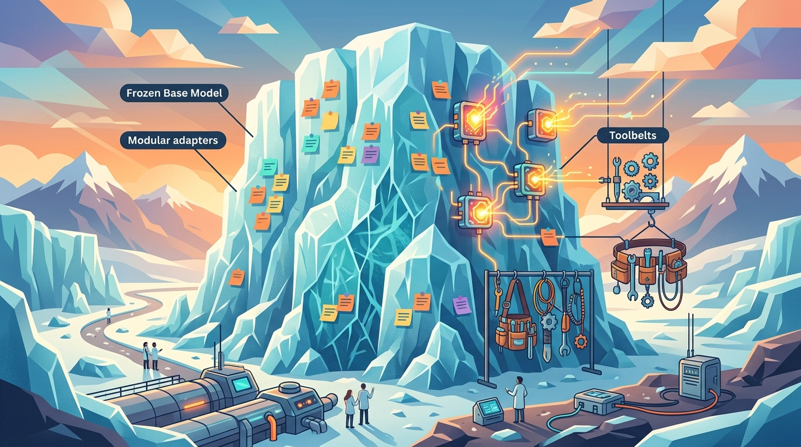

"The best parameter is the one you don't have to train."
An Efficient AI Agent

Full fine-tuning of a 7B parameter model requires about 14 GB just for the weights in FP16, plus optimizer states that push the total past 56 GB. For most practitioners, this puts full fine-tuning out of reach without expensive multi-GPU setups. Parameter-efficient fine-tuning (PEFT) methods solve this problem by training only a tiny fraction of parameters (often less than 1%) while achieving quality that rivals or matches full fine-tuning.
This module covers the most important PEFT techniques in depth, starting with LoRA and QLoRA (the dominant methods in practice) and extending to newer approaches like DoRA, LoRA+, and adapter-based methods. You will learn not just the theory behind each method, but also how to configure hyperparameters, select target modules, and merge adapters for efficient deployment.
The final section surveys the rapidly evolving ecosystem of training platforms and tools, from Unsloth (which delivers 2x speedups with half the memory) to managed platforms like Axolotl and LLaMA-Factory. By the end of this module, you will be able to fine-tune any open-weight model on a single consumer GPU.
Who: A three-person ML team at a telemedicine startup.
Situation: The team needed to fine-tune a 13B parameter medical language model to generate patient-friendly discharge summaries in Spanish and English.
Problem: Full fine-tuning required four A100 GPUs at roughly $12/hour, a cost that would exhaust their quarterly compute budget within two weeks.
Dilemma: They could either downgrade to a smaller 3B model (sacrificing medical accuracy) or find a way to train the 13B model within budget.
Decision: They adopted QLoRA with rank 16 and NF4 quantization, reducing memory to fit on a single A100 40GB.
How: Using the PEFT library with bitsandbytes, they quantized the base model to 4-bit, attached LoRA adapters to all attention projection layers, and trained on 8,000 curated discharge summaries.
Result: Training completed in 6 hours on one GPU at a total cost of $18. The model scored within 2% of the fully fine-tuned baseline on their clinical accuracy benchmark.
Lesson: QLoRA makes large-model fine-tuning accessible to teams with limited budgets, and the quality tradeoff is often negligible for domain-specific tasks. See also model distillation for additional cost-saving strategies.
Who: The ML infrastructure team at a large European e-commerce marketplace.
Situation: The platform supported 40 regional storefronts, each needing a customized product description generator tuned to local language, style, and regulatory requirements.
Problem: Deploying 40 separate fine-tuned models would require 40 copies of the 7B base model in GPU memory, an infrastructure cost exceeding $200,000/month.
Dilemma: Consolidating into a single generic model would lose regional quality; maintaining 40 full models was financially unsustainable.
Decision: They trained 40 LoRA adapters (one per region) and deployed them using S-LoRA on a shared base model.
How: Each adapter was rank 8, totaling only 4 MB per adapter. S-LoRA dynamically loaded the correct adapter per request, keeping the 7B base model loaded once in GPU memory.
Result: Infrastructure costs dropped to $12,000/month. Average latency increased by only 3 ms per request due to adapter switching. Regional quality metrics remained on par with individually fine-tuned models.
Lesson: Multi-adapter serving transforms PEFT from a training optimization into a deployment architecture, enabling mass customization without proportional cost increases.
LoRA is the Marie Kondo of machine learning: it looks at your 7 billion parameters and asks, "Do all of these spark joy?" Then it politely freezes 99% of them and trains a tidy little matrix that somehow does nearly the same job. Your GPU has never been so relieved.
Who: The NLP lead at a mid-sized legal technology company.
Situation: The company wanted to fine-tune Llama 2 70B to draft contract clauses, a task requiring precise legal language and formatting.
Problem: Initial experiments with LoRA rank 8 produced outputs that occasionally hallucinated clause numbers and misformatted legal citations.
Dilemma: Increasing LoRA rank to 64 improved accuracy but doubled training time. Full fine-tuning was accurate but required eight A100 80GB GPUs.
Decision: They used QLoRA with rank 32 targeting all linear layers (not just attention), combined with a carefully curated dataset of 15,000 verified contract clauses.
How: By expanding target modules beyond the default attention projections to include MLP layers, the adapter captured the formatting patterns that lower-rank attention-only configurations missed.
Result: The QLoRA model matched full fine-tuning accuracy at 94.2% on their clause correctness benchmark, while training on two A100 40GB GPUs in 18 hours.
Lesson: When LoRA underperforms, the fix is often expanding target modules and curating data rather than abandoning PEFT entirely. Rank selection and module targeting matter more than most practitioners realize.
Who: A computational linguistics PhD student with access to a single RTX 4090.
Situation: The student needed to run 50 ablation experiments comparing different LoRA configurations on a 7B model for her dissertation, each requiring a full training run.
Problem: Using standard Hugging Face Trainer with QLoRA, each run took 4.5 hours. At 50 experiments, the total wall time would exceed 9 days of continuous GPU usage.
Dilemma: She could reduce the dataset (risking unreliable results) or find a way to speed up each run without changing the experimental setup.
Decision: She switched to Unsloth, which provides optimized CUDA kernels for LoRA training with no code changes beyond swapping the model loader.
How: Unsloth's fused kernels reduced each training run from 4.5 hours to 2.1 hours while cutting peak memory usage by 40%, all without changing any hyperparameters.
Result: All 50 experiments completed in under 5 days. The memory savings also allowed her to increase batch size, further stabilizing training curves.
Lesson: Training platforms like Unsloth deliver meaningful speedups through kernel-level optimizations. For iterative research workflows, these gains compound dramatically.
Trying to fully fine-tune a 70B model on a single GPU is like trying to park an aircraft carrier in a residential garage. PEFT methods are the engineering equivalent of saying, "What if we just shipped the steering wheel and a few seats instead?" Somehow, the thing still drives.
In the next section, Section 14.1: LoRA & QLoRA, we start with LoRA and QLoRA, the most widely adopted PEFT methods that add small trainable adapters to frozen models.
Hu, E.J., Shen, Y., Wallis, P., Allen-Zhu, Z., Li, Y., Wang, S., Wang, L., & Chen, W. (2021). "LoRA: Low-Rank Adaptation of Large Language Models." arxiv.org/abs/2106.09685
The original LoRA paper, introducing low-rank decomposition of weight updates as a parameter-efficient alternative to full fine-tuning.
Dettmers, T., Pagnoni, A., Holtzman, A., & Zettlemoyer, L. (2023). "QLoRA: Efficient Finetuning of Quantized Language Models." arxiv.org/abs/2305.14314
Introduces QLoRA with NF4 quantization and double quantization, enabling fine-tuning of 65B models on a single 48GB GPU.
Liu, S., Wang, C., Yin, H., Molchanov, P., Wang, Y.C., Cheng, K., & Chen, M. (2024). "DoRA: Weight-Decomposed Low-Rank Adaptation." arxiv.org/abs/2402.09353
Decomposes weight updates into magnitude and direction components, closing the gap between LoRA and full fine-tuning on several benchmarks.
Hayou, S., Ghosh, N., & Yu, B. (2024). "LoRA+: Efficient Low Rank Adaptation of Large Models." arxiv.org/abs/2402.12354
Proposes using different learning rates for the A and B matrices in LoRA, yielding faster convergence and improved performance.
Houlsby, N., Giurgiu, A., Jastrzebski, S., Morrone, B., de Laroussilhe, Q., Gesmundo, A., Attariyan, M., & Gelly, S. (2019). "Parameter-Efficient Transfer Learning for NLP." arxiv.org/abs/1902.00751
The foundational adapter layers paper, proposing small bottleneck modules inserted between transformer layers for efficient task adaptation.
Li, X.L. & Liang, P. (2021). "Prefix-Tuning: Optimizing Continuous Prompts for Generation." arxiv.org/abs/2101.00190
Introduces learnable prefix vectors prepended to transformer keys and values, providing an alternative PEFT approach that keeps all model weights frozen.
Tunstall, L., von Werra, L., & Wolf, T. (2022). Natural Language Processing with Transformers. O'Reilly Media. oreilly.com
Comprehensive guide to the Hugging Face ecosystem, covering fine-tuning, PEFT, and practical deployment of transformer models.
Raschka, S. (2025). Build a Large Language Model (From Scratch). Manning. manning.com
Walks through building and fine-tuning LLMs step by step, with detailed coverage of LoRA implementation from first principles.
Hugging Face PEFT Library. github.com/huggingface/peft
The primary open-source library for parameter-efficient fine-tuning, supporting LoRA, QLoRA, Prefix Tuning, IA3, and more.
Unsloth. github.com/unslothai/unsloth
Optimized training framework delivering 2x speedups for LoRA and QLoRA fine-tuning through custom CUDA kernels with no code changes.
Axolotl. github.com/OpenAccess-AI-Collective/axolotl
Configuration-driven fine-tuning framework that simplifies multi-GPU LoRA training with YAML-based experiment management.
LLaMA-Factory. github.com/hiyouga/LLaMA-Factory
Unified fine-tuning platform with a web UI, supporting over 100 LLM architectures with LoRA, QLoRA, and full fine-tuning options.
Sheng, Y., Cao, S., Li, D., et al. (2023). "S-LoRA: Serving Thousands of Concurrent LoRA Adapters." arxiv.org/abs/2311.03285
Presents a system for serving thousands of LoRA adapters from a shared base model with minimal overhead, enabling multi-tenant deployments.